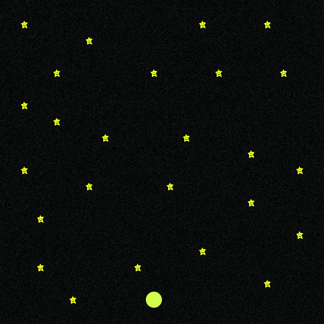
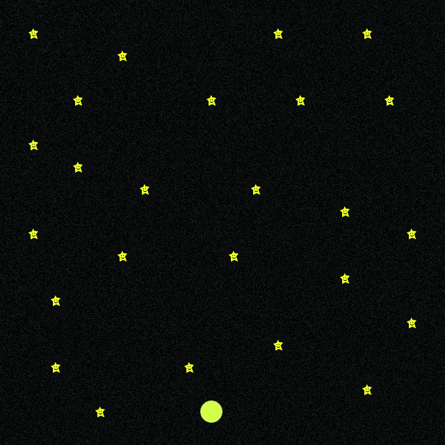
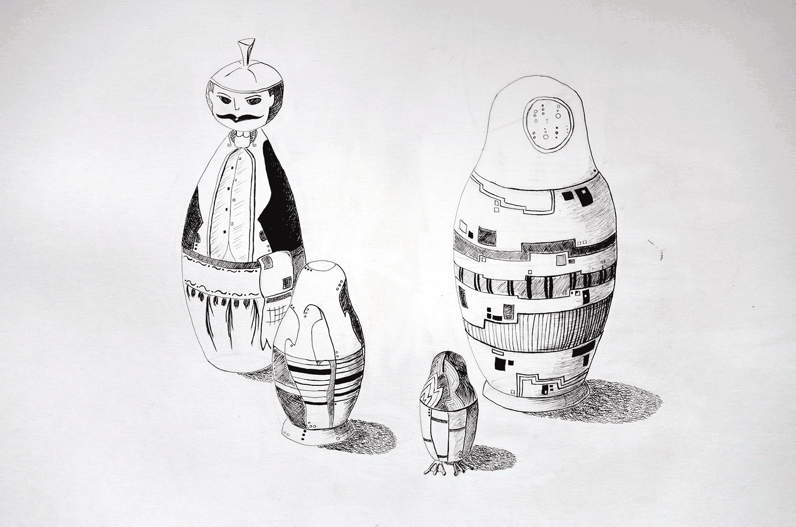
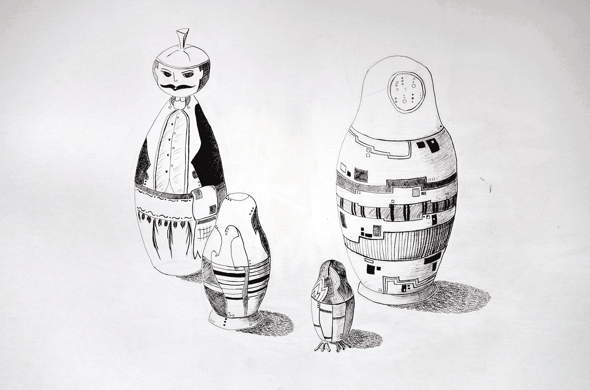

Portfolio

Contact
Paris, France
julie.puech31@yahoo.fr
+33 6 22 19 39 49
Bonjour & Bienvenue!
Je m'appelle Julie PUECH et voici mon e-portfolio. Vous pouvez regarder mes projet, me contacter ou juste flanner!
Mon parcours
Je suis actuellement à l'IMAC, une école d'ingénieur melant art et sciences : programmation pour les jeux vidéos (C, C++, OpenGL, Java), pour le web (HTML, CSS, Javascript), communication, design sont au programme. Sortant de classe préparatoire Maths Physique (MP) et ayant un veritable interet pour le dessin et l'art en général, l'IMAC m'a permis d'allier mes deux domaines de prédilection/
Qui suis - je ?
Curiosité, originalité et créativité sont mes maîtres mots. Je suis toujours à l'affut des nouvelles tendances graphiques et de nouveaux suports ou technologies pour experimenter. A travers mes nombreux voyages, j'ai pu interagir avec différentes cultures et différentes façons d'appréhender l'art et la création, ce qui m'influence au quotidien sur mes projets.
Paris, France
julie.puech31@yahoo.fr
+33 6 22 19 39 49
 

 
